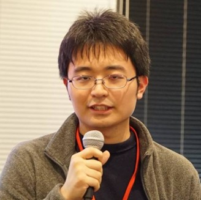

高田 勝也/Katsuya Takada

学部研究テーマ：往復を前提とした一時的スクロール手法の提案(インタラクション2017 発表)
修士研究テーマ：VR空間内における「眼が飛び出た」ような視界変化
Github
VRアスレチック(CG演習課題)
発表日：2017年6月
コンピュータグラフィックス特論で作成した課題
仕様したツール：Unity
対応HMD：HTCVive
使用したアセット：SteamVR Plugin, VRTK - Virtual Reality Toolkit
概要
スタート地点からゴールまでViveコントローラを用いて移動してください。
黄色いオブジェクトにコントローラを近づけてトリガーを引くことでオブジェクトに捕まることができます。
操作方法
左右トリガー：オブジェクトを掴む タッチパッド押し込み：ワープ移動
VR酔いゲーム(ABPro2017)
発表：2017年9月
ABPro2017で発表した作品です
仕様したツール：Unity
対応HMD：HTCVive
使用したアセット：SteamVR Plugin, VRTK - Virtual Reality Toolkit
概要
射的、ボウリング、綱渡りの三種類のゲームを、ベースステーションが不安定な状態でプレイします。
サイコロを振って出た目の指示に従ってプレイを進行してください。
遊ぶためにはSteamVR対応のHMD(HTCViveなど)とコントローラー2つが必要です。
操作方法
スタートシーン
コントローラーをサイコロに近づけてグリップボタンを押すとサイコロを持ち上げられます。
サイコロを投げると壁の柄が変化し、カウントダウンが始まります。
この間で出た目の指示に従ってください。
● Move&Shot,Move&Ball,Move&Rope が出た場合
ベースステーションを今の位置から別の位置に動かしてください。
● Shake&Shot,Shake&Ball,Shake&Rope が出た場合
ベースステーションをゆっくり揺らしてください。
カウントダウンが終わるとシーンが変化します。
ゲームシーン
● Move&Shot,Shake&Shot
コントローラーを銃型のオブジェクトに近づけてグリップボタンを押すとオブジェクトを把持できます。
オブジェクトを把持した状態でトリガーを引くと弾が発射されます。
弾をいずれかの球体のターゲットにあてると「nice!」の文字が表示され、成功です。
● Move&Ball,Shake&Ball
コントローラーを球体のオブジェクトに近づけてグリップボタンを押すとオブジェクトを把持できます。
オブジェクトを把持した状態でグリップボタンを離すとオブジェクトを投げることができます。
球体がボウリングのピンにあたり、ピンが一つでも倒れると「nice!」の文字が表示され、成功です。
● Move&Rope,Shake&Rope
コントローラーは使用しません。
綱状のオブジェクトが設置された方向へ自動的に移動していきます。
頭の位置をちょうど綱状のオブジェクトの真上になるよう維持してください。
綱状のオブジェクトから滑り落ちずに最後まで渡りきると「nice!」の文字が表示され、成功です。
VRcraft(ABPro2016)
発表日：2016年9月
ABPro2016作品「VRcraft」を改良し、オープンキャンパスで展示した作品です
仕様したツール：Unity
対応HMD：HTCVive
使用したアセット：SteamVR Plugin, VRTK - Virtual Reality Toolkit, Fantasy Skybox FREE
概要
四角柱、円柱、球体をVR空間上に出力して遊ぶことができます。
それぞれのパネルに触れるとその種類の物体が出現します。
遊ぶためにはSteamVR対応のHMD(HTCViveなど)とコントローラー2つが必要です。
操作方法
v_1.0
ABPro2016で作成したバージョンに近いものです。
● 青いパネルに触れると重力で落下する物体が出現します。
● 黄色いパネルに触れると重力の影響を受けない物体が出現します。
● 緑色のパネルのノブを上下に動かすことで、物体の縦・横・高さの大きさを変更することができます。
● 物体に触れながらコントローラーのグリップボタンを押すことでその物体を把持することができます。
● コントローラーのトリガーを引くことで物体をすべて消すことができます。
● 積みあがった物体に近づくと、その物体の上に立つことができます。頭の位置より高く積みあがった物体には登ることができません。
v_2.0
オープンキャンパス用に操作を簡単にしたものです。
● パネルに触れると重力で落下する物体が音を出しながら出現します。
● 緑色のパネルのノブを上下に動かすことで、物体の縦・横・高さの大きさを変更することができます。
● 物体に触れながらコントローラーのトリガーを引くことでその物体を把持することができます。その際音が鳴ります。
※こちらのモードでは重力の影響を受けない物体の出力と物体の消去はできません。物体を消去したいときは再起動してください。
Tribion
発表日：2014年10月
サークル制作作品
仕様したツール：Processing
概要
サークルで制作したシューティングゲームです。
processing.js版
操作方法
メニューでの操作
Enterキー：決定
Shiftキー：戻る
↑キー、↓キー：選択
ゲーム中の動作
Spaceキー：ショット
↑、↓、→、←キー：自機の移動
Shiftキー：押し続けることで低速移動モード
Reversi
発表日：2014年10月
サークル制作作品
仕様したツール：Processing
概要
サークルで制作したリバーシです。
processing.js版
操作方法
クリックでスタート、自分は黒です。
クリックすることで石が置けます。
何かキーを押すとリセットされます。